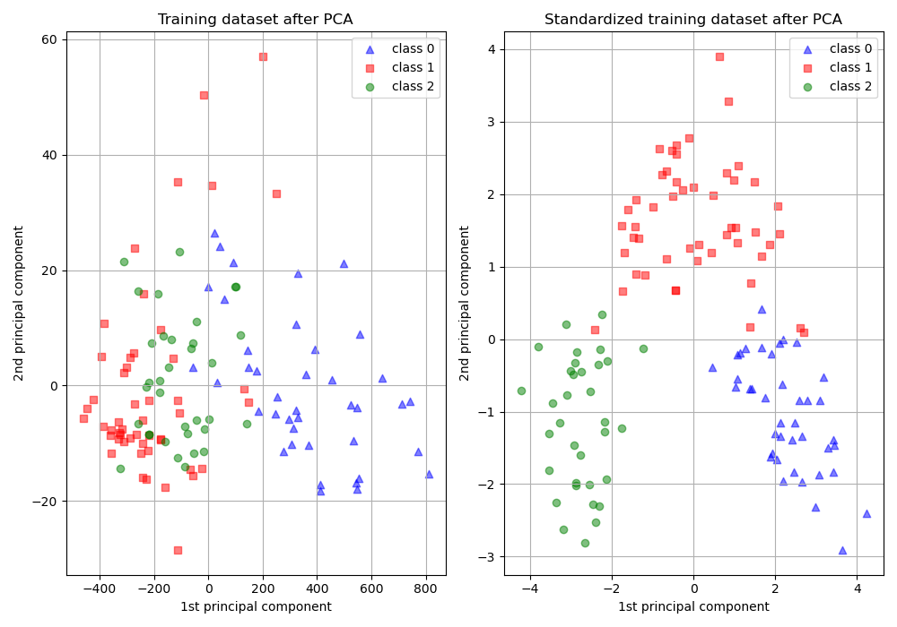

Nota
Haz clic aquí para descargar el código de ejemplo completo o para ejecutar este ejemplo en tu navegador a través de Binder
Importancia de escala de características¶
El escalado de características a través de la estandarización (o normalización de puntaje Z) puede ser un paso importante de preprocesamiento para muchos algoritmos de aprendizaje de máquinas. La estandarización implica reescalar las características de tal forma que tengan las propiedades de una distribución normal estándar con una media de cero y una desviación estándar de una.
Mientras que muchos algoritmos (como SVM, K-vecinos más cercanos y regresión logística) requieren que las características sean normalizadas, intuitivamente podemos pensar en el Análisis de Componentes Principales (PCA) como un ejemplo principal de cuando la normalización es importante. En el PCA nos interesan los componentes que maximizan la varianza. Si un componente (por ejemplo, la estatura humana) varía menos que otro (por ejemplo, el peso) debido a sus respectivas escalas (metros vs kilos), el PCA podría determinar que la dirección de la varianza máxima se corresponde más con el eje del “peso”, si esas características no están escaladas. Como un cambio de altura de un metro puede considerarse mucho más importante que el cambio de peso de un kilo, esto es claramente incorrecto.
Para ilustrar esto, se realiza un PCA comparando el uso de datos con StandardScaler aplicado, con datos sin escalar. Se visualizan los resultados y se observa una clara diferencia. Se puede ver el primer componente principal en el conjunto sin escalar. Se puede ver que la característica #13 domina la dirección, estando dos órdenes de magnitud por encima de las otras características. Esto se contrasta al observar el componente principal para la versión escalada de los datos. En la versión escalada, los órdenes de magnitud son aproximadamente los mismos en todas las características.
El conjunto de datos utilizado es el Wine Dataset (Datos de vinos) disponible en la UCI. Este conjunto de datos tiene características continuas que son heterogéneas en escala debido a las diferentes propiedades que miden (es decir, el contenido de alcohol y el ácido málico).
Los datos transformados se utilizan para entrenar un clasificador ingenuo de Bayes, y se observa una clara diferencia en las precisiones de predicción donde el conjunto de datos que es escalado antes de que PCA supere ampliamente la versión sin escalar.
Out:
Prediction accuracy for the normal test dataset with PCA
81.48%
Prediction accuracy for the standardized test dataset with PCA
98.15%
PC 1 without scaling:
[ 1.76342917e-03 -8.35544737e-04 1.54623496e-04 -5.31136096e-03
2.01663336e-02 1.02440667e-03 1.53155502e-03 -1.11663562e-04
6.31071580e-04 2.32645551e-03 1.53606718e-04 7.43176482e-04
9.99775716e-01]
PC 1 with scaling:
[ 0.13443023 -0.25680248 -0.0113463 -0.23405337 0.15840049 0.39194918
0.41607649 -0.27871336 0.33129255 -0.11383282 0.29726413 0.38054255
0.27507157]
from sklearn.model_selection import train_test_split
from sklearn.preprocessing import StandardScaler
from sklearn.decomposition import PCA
from sklearn.naive_bayes import GaussianNB
from sklearn import metrics
import matplotlib.pyplot as plt
from sklearn.datasets import load_wine
from sklearn.pipeline import make_pipeline
print(__doc__)
# Code source: Tyler Lanigan <tylerlanigan@gmail.com>
# Sebastian Raschka <mail@sebastianraschka.com>
# License: BSD 3 clause
RANDOM_STATE = 42
FIG_SIZE = (10, 7)
features, target = load_wine(return_X_y=True)
# Make a train/test split using 30% test size
X_train, X_test, y_train, y_test = train_test_split(features, target,
test_size=0.30,
random_state=RANDOM_STATE)
# Fit to data and predict using pipelined GNB and PCA.
unscaled_clf = make_pipeline(PCA(n_components=2), GaussianNB())
unscaled_clf.fit(X_train, y_train)
pred_test = unscaled_clf.predict(X_test)
# Fit to data and predict using pipelined scaling, GNB and PCA.
std_clf = make_pipeline(StandardScaler(), PCA(n_components=2), GaussianNB())
std_clf.fit(X_train, y_train)
pred_test_std = std_clf.predict(X_test)
# Show prediction accuracies in scaled and unscaled data.
print('\nPrediction accuracy for the normal test dataset with PCA')
print('{:.2%}\n'.format(metrics.accuracy_score(y_test, pred_test)))
print('\nPrediction accuracy for the standardized test dataset with PCA')
print('{:.2%}\n'.format(metrics.accuracy_score(y_test, pred_test_std)))
# Extract PCA from pipeline
pca = unscaled_clf.named_steps['pca']
pca_std = std_clf.named_steps['pca']
# Show first principal components
print('\nPC 1 without scaling:\n', pca.components_[0])
print('\nPC 1 with scaling:\n', pca_std.components_[0])
# Use PCA without and with scale on X_train data for visualization.
X_train_transformed = pca.transform(X_train)
scaler = std_clf.named_steps['standardscaler']
X_train_std_transformed = pca_std.transform(scaler.transform(X_train))
# visualize standardized vs. untouched dataset with PCA performed
fig, (ax1, ax2) = plt.subplots(ncols=2, figsize=FIG_SIZE)
for l, c, m in zip(range(0, 3), ('blue', 'red', 'green'), ('^', 's', 'o')):
ax1.scatter(X_train_transformed[y_train == l, 0],
X_train_transformed[y_train == l, 1],
color=c,
label='class %s' % l,
alpha=0.5,
marker=m
)
for l, c, m in zip(range(0, 3), ('blue', 'red', 'green'), ('^', 's', 'o')):
ax2.scatter(X_train_std_transformed[y_train == l, 0],
X_train_std_transformed[y_train == l, 1],
color=c,
label='class %s' % l,
alpha=0.5,
marker=m
)
ax1.set_title('Training dataset after PCA')
ax2.set_title('Standardized training dataset after PCA')
for ax in (ax1, ax2):
ax.set_xlabel('1st principal component')
ax.set_ylabel('2nd principal component')
ax.legend(loc='upper right')
ax.grid()
plt.tight_layout()
plt.show()
Tiempo total de ejecución del script: (0 minutos 0.256 segundos)